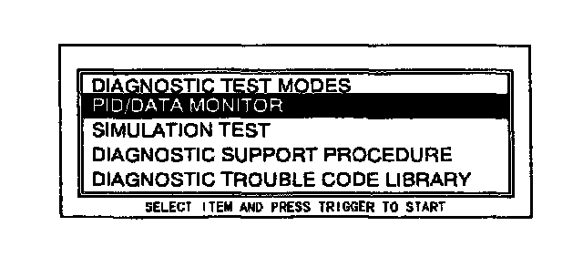
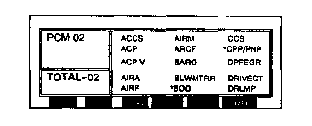
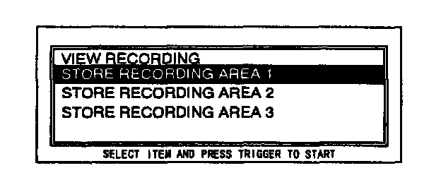

PID/Data Monitor and Record Procedure
NOTE:- This is a specific function.
1. Perform the NGS tester Hook-up Procedure.
2. Perform steps 1 through 8 from the DTCs Reading Procedure.
3. Turn the ignition switch on or engine running.

4. Move the cursor to PID/DATA MONITOR AND RECORD. Press the trigger key to enter this selection.

5. Move the cursor to PID values to view. Press the trigger key. A star symbol will appear next to the item when it is selected.
NOTE:
- Press the trigger key once again to deselect a PID.
- Press CLEAR to deselect all PIDs.
6. Press START to begin.
7. When ready to capture and store the selected PIDs press the trigger key.
8. Press the trigger key again when ready to save information.

9. Move the cursor to STORE RECORDING IN AREA 1. Press the trigger key.
10. Follow the instructions displayed on the NGS tester to save the recording data.